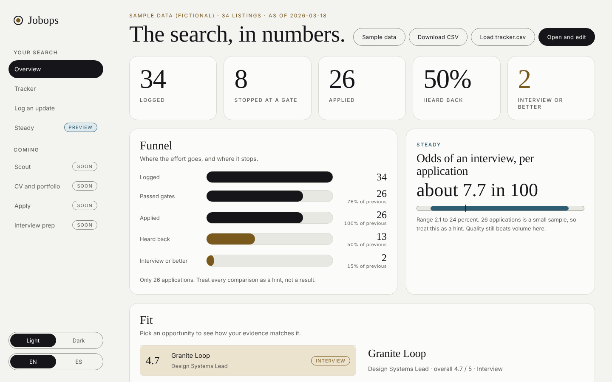
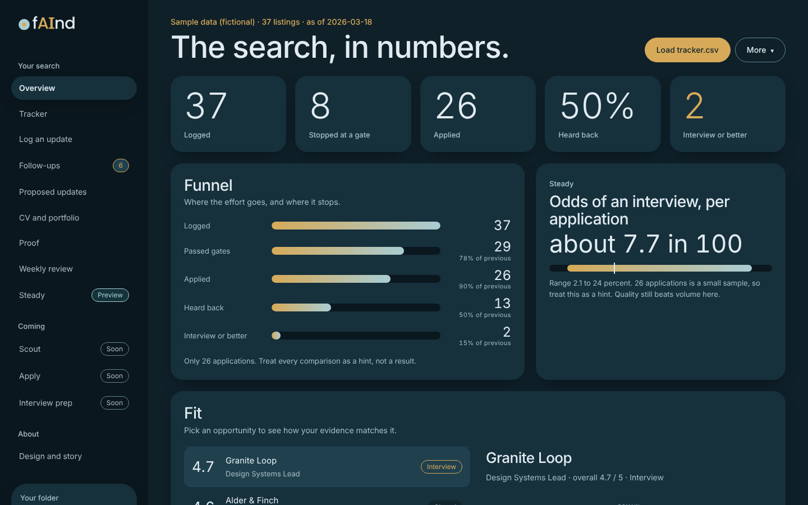
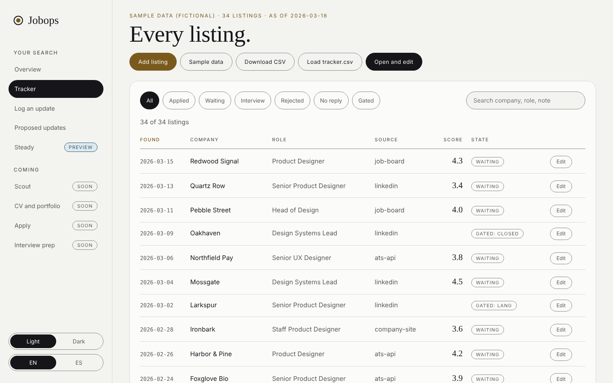
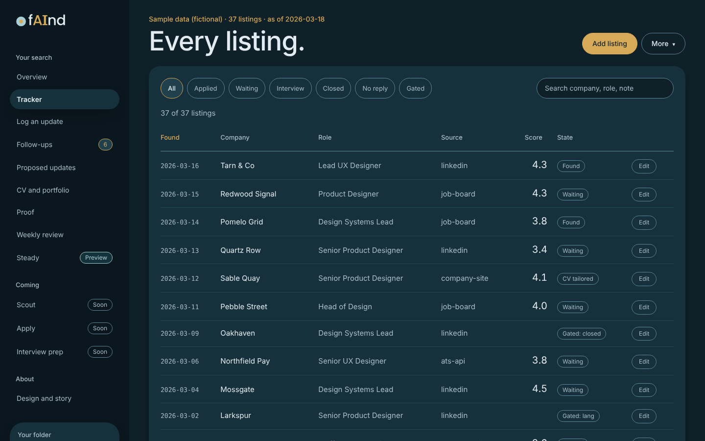
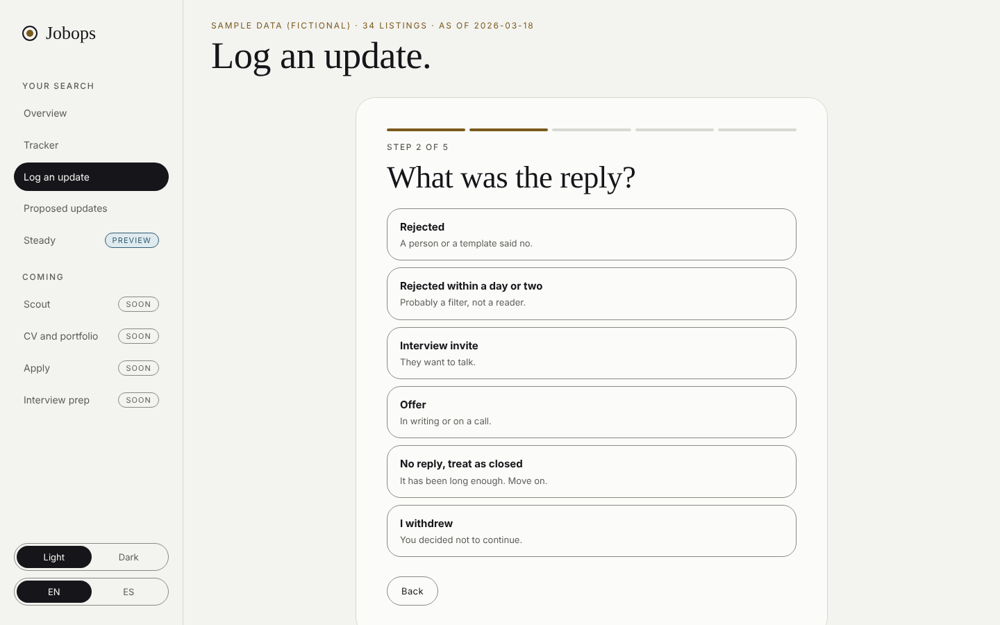
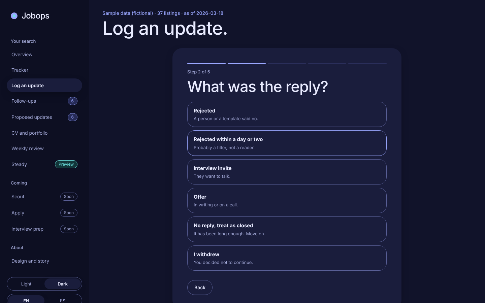
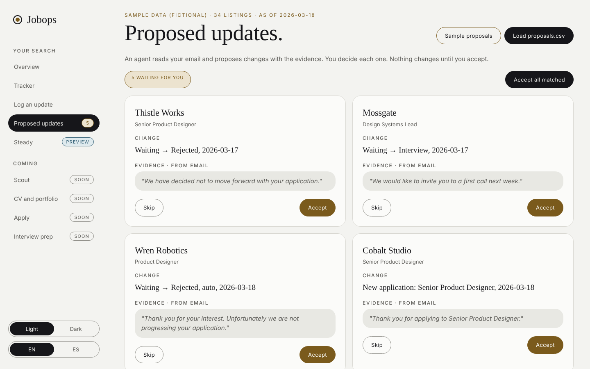
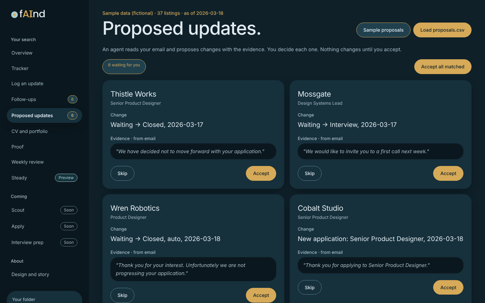
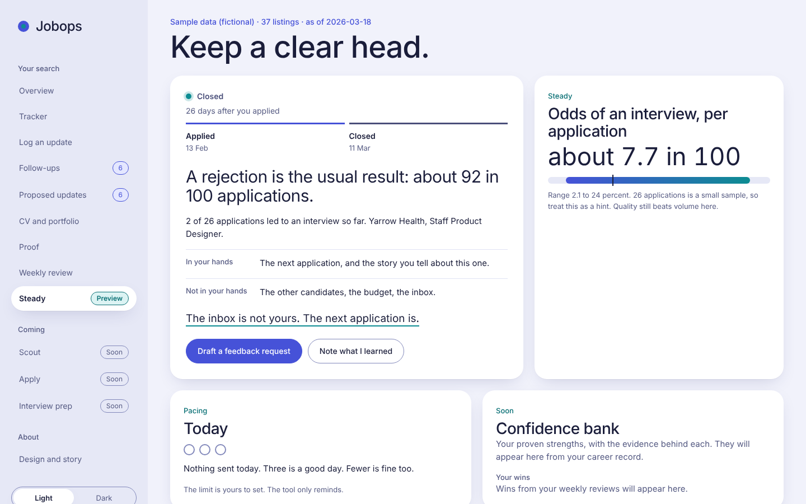
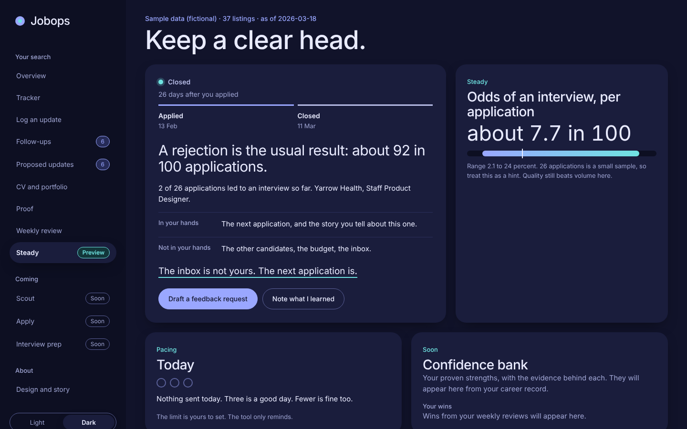

JobOps
Keep an honest record of your search. See your real odds. Stay steady when the replies are no.


Steady
Most applications end in a no. That is the arithmetic of a search, not a judgement of you. JobOps puts the number where you can see it, then gives you something to do next.
The product
Track
The funnel, the waiting list, the sources, the fit. Small samples are labelled as small. There is no fake precision here.




Log
A reply arrived. You applied. You had an interview. Pick, press Enter, done. Nobody wants a long form on the day of a rejection.
Proposed updates
An agent reads your mail and proposes changes, each with the sentence that proves it. Nothing changes until you accept.




Steady Preview
Your own base rate, in plain words. A pacing guard that says three is a good day. One dry line to carry after a no.
Private by design
JobOps runs in your browser and edits one CSV file on your computer. Nothing is uploaded.
Open the page. That is the whole setup.
Your data is a file you can read, move and delete.
The page makes no network requests and uses system fonts.
Design
Deep indigo and soft light, with one periwinkle accent and an aqua for calm. Cards lift with shadow instead of borders. A no is a closed door, not a red alarm, so it gets a quiet slate and an aqua dot. Periwinkle marks what is yours to act on.
Type
Aa
The app itself uses system fonts, so it stays offline and private.
Shape
Cards sit at 22 to 28 and lift with shadow. Buttons, tags and chips are pills. Corners soften the whole product on purpose.
Buttons and tags
Odds meter
about 7.7 in 100
The range shows the uncertainty. A small sample is said out loud.
Step form
Rejection card
A rejection is the usual result: about 92 in 100 applications.
Number, then meaning, then one line.
Mail, not a verdict.
Principles
Voice
Encouragement fatigue is real. So JobOps never says "don't worry". It says the number, what it means, and one line worth keeping. In English and in Spanish, as equals.
Don't worry, the right job is out there!
Mail, not a verdict.
Correo, no un veredicto.
You've got this, keep smiling!
The inbox is not yours. The next application is.
La bandeja no es tuya. La próxima candidatura sí.
Rejected again.
One more data point. Not one more opinion of you.
Un dato más. No una opinión más sobre ti.
Why this exists
I am a UX designer. I used AI to look for work, and the results were poor. So I designed the tool I wished I had, and built it with Claude. It is also my portfolio, and the numbers on the story page are my own.
Roadmap
What works today, what is next, and what is only a plan.